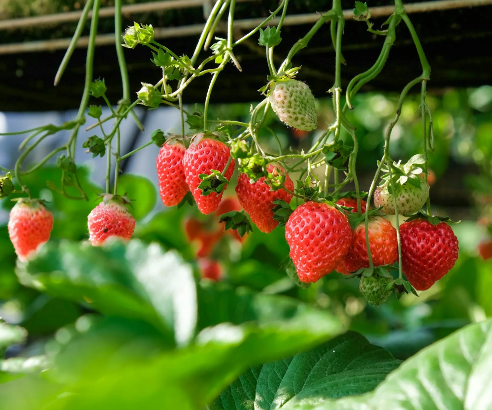

Strawberry is a sweet and juicy fruit loved for its bright red color and refreshing taste. It is commonly used in desserts, drinks, jams, cakes, and healthy snacks. Strawberries grow well in cool environments and are suitable for pots, hanging baskets, gardens, and small farming projects.
Needs 6–8 hours of sunlight daily for healthy fruit production and sweetness.
Water regularly to keep soil moist but avoid soaking the roots or fruits.
Best growth at 15°C – 26°C. Cooler climates help produce sweeter fruits.
Use fertile, well-draining soil rich in organic matter and compost.
Fruits can be harvested when fully red and ripe, usually 2–3 months after planting.
Used in desserts, smoothies, cakes, jams, ice cream, juices, and healthy snacks.
Cause: Overwatering and poor drainage.
Solution: Improve drainage and reduce excessive watering.
Cause: High humidity and poor airflow.
Solution: Space plants properly and remove rotten fruits.
Cause: Nutrient deficiency or overwatering.
Solution: Add compost and water carefully.
Cause: Common garden pests attacking leaves and fruits.
Solution: Use natural pest control and keep garden clean.
Cause: Lack of sunlight or nutrients.
Solution: Increase sunlight exposure and fertilize properly.